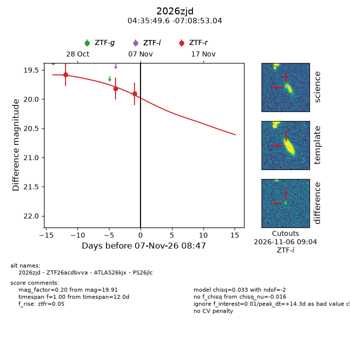
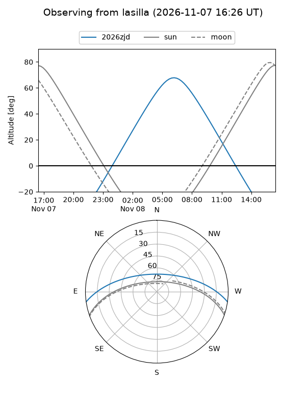
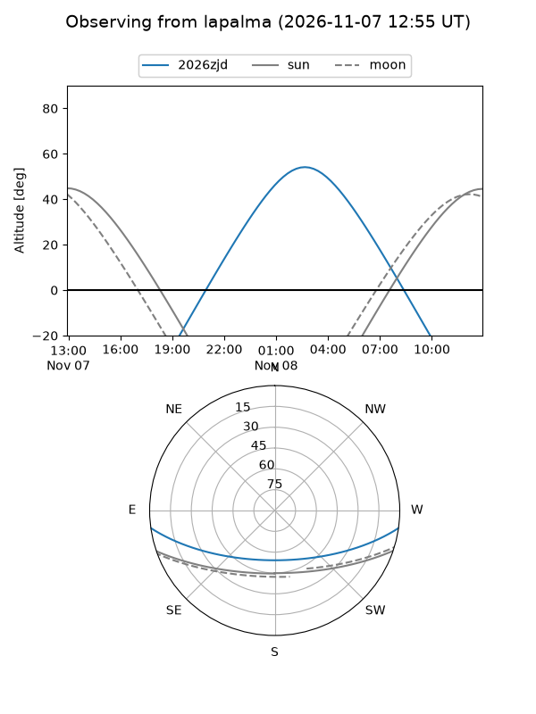
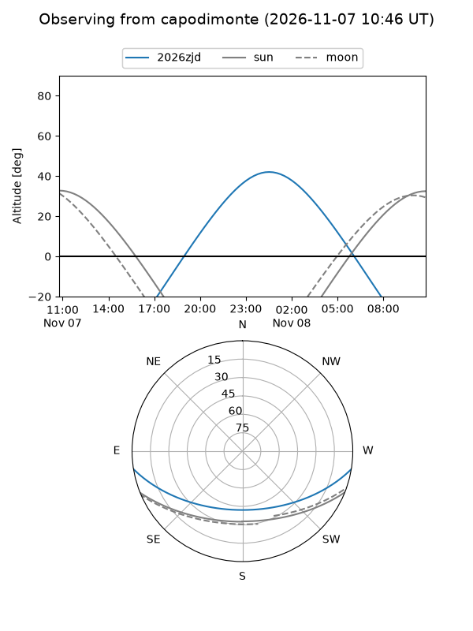
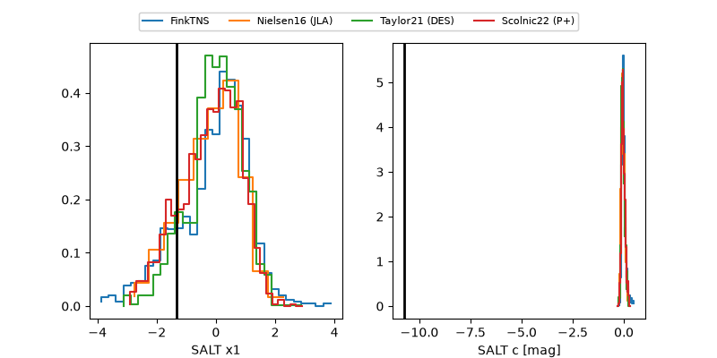

2026zjd
Target 2026zjd at 2026-11-07 20:49
Aliases and brokers:
FINK-ZTF: ztf.fink-portal.org/ZTF26acdbvva
Lasair-ZTF: lasair-ztf.lsst.ac.uk/objects/ZTF26acdbvva
ALeRCE-ZTF: alerce.online/object/ZTF26acdbvva
YSE-PZ: ziggy.ucolick.org/yse/transient_detail/2026zjd
TNS name: wis-tns.org/object/2026zjd
Direct TNS query: direct search
alt names
ZTF26acdbvva (ztf,fink_ztf)
2026zjd (tns,yse)
ATLAS26kjx (atlas)
PS26jlc (panstarrs)
Coordinates:
equatorial (ra, dec) = 68.9567,-7.14807
equatorial (HMS+DMS) = 04:35:49.60,-07:08:53.04
galactic (l, b) = (203.1744,-33.31930)
Flags:
peak dt: +14.8
Photometry:
last ztfr=19.91
3 ztfr detections
Lightcurve

Visibility



Additional plots
